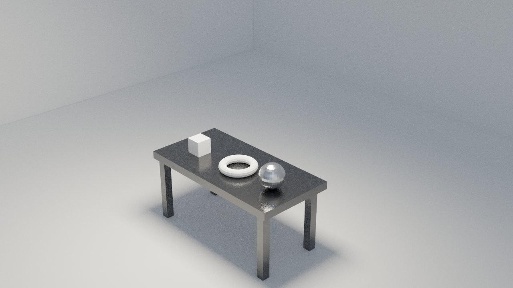

Python Scripting for Maya
I am learning Python scripting for Autodesk Maya to automate tasks and enhance animation workflows. See my progress and code examples in this public repository:
View GitHub RepoBlender Animation Examples
Here are some of my Blender animation and rendering experiments:
Blender Animation (Frames 0-110)
Blender Animation (Frames 1-50)
Blender Animation (Frames 1-84, MKV)

Blender Render: Pissenlit
Rendering Study €” Cycles (Samples & Denoise)
A guided study to measure the impact of samples and denoising on noise, quality, and render time.
Étude guidée pour mesurer l€™impact des samples et du denoise sur le bruit, la qualité et le temps de rendu.
| Image | Samples | Denoise | Render Time |
|---|---|---|---|
| R1 | 16 | OFF | 00:10.08 |
| R2 | 64 | OFF | 01:09.65 |
| R3 | 256 | OFF | 04:47.50 |
| R4 | 256 | ON | 06:20.87 |
| R5 | 1024 | ON | €” |
R1 €” 16 samples, denoise OFF

R2 €” 64 samples, denoise OFF
R3 €” 256 samples, denoise OFF
R4 €” 256 samples, denoise ON

R5 €” 1024 samples, denoise ON
- Focus points: shadow noise, metallic reflections, and the quality jump with denoise.
- Points d€™observation : bruit dans les ombres, reflets métalliques, et le gain avec le denoise.
- Comparison: 256 vs 1024 samples when denoising is enabled.
- Comparaison : 256 vs 1024 samples avec denoise activé.